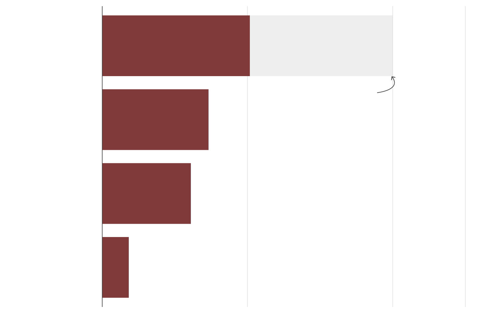
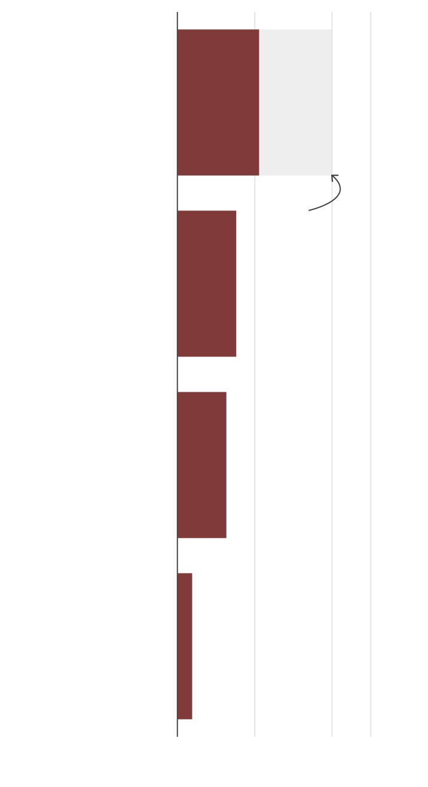
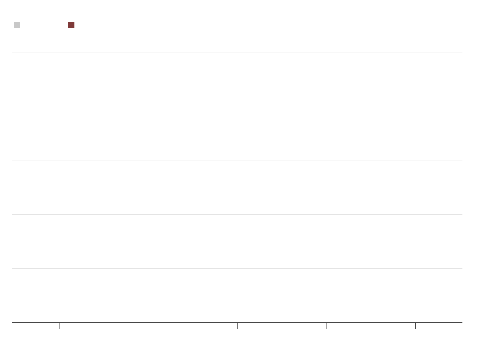
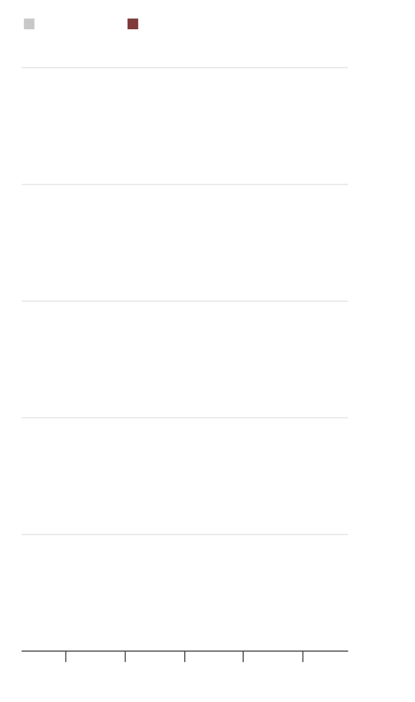
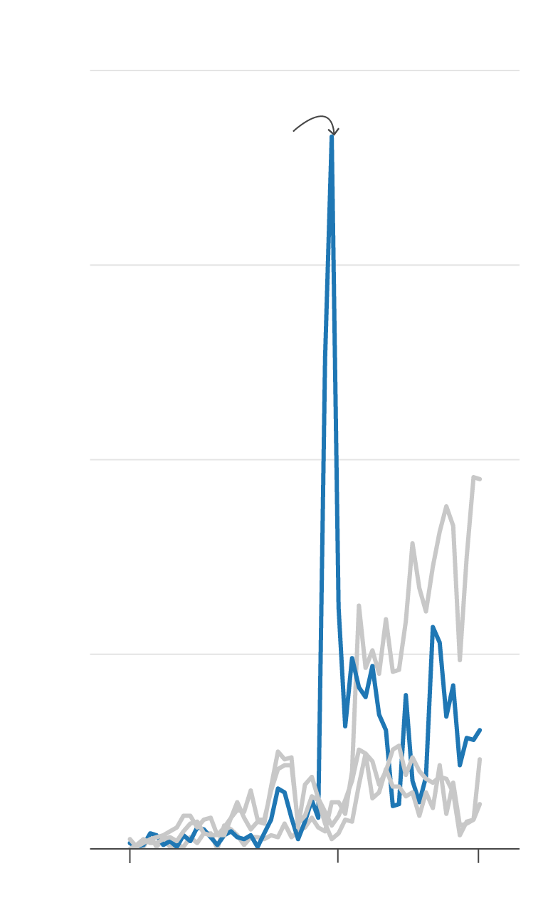

FOI improved information access. But gov't has also kept sensitive ones under wraps
April 17, 2022
Updated: April 27, 2022*
When Philippine President Rodrigo Duterte signed an executive order on Freedom for Information (FOI) shortly after he was elected in 2016, his spokesperson, Martin Andanar, said that
“contracts involving the use of public funds will be made available” to the public.
But nearly six years after, not only are contents of most government contracts still inaccessible to the public, but previously available documents like annual filings that reveal public officials' source of wealth have since become difficult to obtain, even for members of the media.
An analysis of inquiries lodged through the FOI website showed less than half have been granted, way below the 80% approval rate that the Presidential Communications Operations Office (PCOO), which oversees the FOI enforcement, has set for participating agencies.
Since November 2016 when the program started, about one in four requests were getting denied, while the rest have stayed pending.
Less than half of FOI requests get approved
Status of FOI requests since 2016 as of April 10

Successful
Gov’t targets
80% FOI approval rate
Pending
Denied
Partially successful
0
40
80
100

Successful
Gov’t targets
80% FOI
approval rate
Pending
Denied
Partially successful
0
40
80
100
Note: "Partially successful" means some of the requests were fulfilled, while some weren't or a different but relavant data to the request were provided.
Sources: FOI portal, Presidential Communications Operations Office
Headline numbers don't also tell the whole story.
Despite the FOI order, sensitive information like government contracts and feasibility studies of public projects are kept under wraps.
Many requests that were approved were “low-ball” requests, as one scholar put it, involving information that should have been made public even without an FOI. In some cases, requests were tagged "successful" on paper, but the information were not released at all.
Analysts said many of the challenges are birth pains of a relatively new program. There is lack of manpower to handle voluminous requests each day, a situation that is exacerbated when citizens still unfamiliar with how the FOI order works misfile their requests.
But many of the problems are also traced from agencies that appear to be intentionally skirting FOI rules. Because of it is just a presidential order and not legislation, FOI is easily overruled by privacy laws, which in turn, provide legal cover to those that deny requests. When this happens, public servants get away from being accountable, while the citizens they serve are just left in the dark.
When Duterte issued Executive Order No. 2 to enforce FOI in the Executive branch, it was welcomed as a swift fulfilment of a campaign promise, one that his predecessors failed to accomplish while waiting in vain for an FOI law to hurdle an unreceptive congress.
Yet, in many cases, freedom of information has been weakened by the agencies themselves, including Duterte's office, making the measure ineffective and incapable of unearthing government wrongdoing that an FOI regime is supposed to do.
Take the Statements of Assets, Liabilities and Net Worth (SALN) as an example.
Each year, public officials are mandated by law to make available their SALN, which shows their source of income and wealth.
Yet Duterte himself did the opposite: all nine requests for his SALN filed with the PCOO and Presidential Management Staff, both under his office, were denied for supposedly being filed with the wrong agency.
Indeed, by law, the Ombudsman serves as the custodian of the SALNs of the president, vice-president and other top officials. But nothing stops a concerned public official from releasing their SALN themselves.
Vice President Leni Robredo did this six times through FOI, as did Duterte's own Cabinet members, Tourism Secretary Bernadette Romulo-Puyat and Labor Secretary Silvestre Bello III.

Denied FOI requests
for SALN
All denied
requests
17 out of 18
SALN requests
were denied
100 %
of requests
80
60
Over one in four
requests for SALN
still being denied
40
20
0
2017
2018
2019
2020
2021

All denied
requests
Denied FOI requests
for SALN
100 %
of requests
17 out of 18
SALN requests
were denied
80
60
40
Over one in four
requests for
SALN denied
20
0
2017
2018
2019
2020
2021
The number of FOI requests getting denied have been on a declining trend.
But looking closely, some of the most crucial requests that seek government accountability are getting denied.
This includes the ones for Statements of Assets Liabilities and Net Worth (SALN).
By law, public workers are required to make their SALN accessible to the public.
But in the past five years, the number of FOI denials for SALN far outpaced that of average.
In 2018 alone, nearly all of SALN requests filed through the FOI portal were denied, supposedly because most of them were filed with the wrong agency.
In 2021, there were still over one in four FOI requests for SALN that did not get granted.
Apart from SALN, FOI requests about the controversial war on drugs were also largely blocked. Since 2016, eight requests about the drug war had been filed, three of which were denied, while four were granted.
One request back in June 2021 was tagged as "accepted" by the justice department, but the agency did not follow through. The request has remained unaddressed to date.
An FOI filing about drug war came from Lian Nami Buan, the justice beat reporter for Rappler. In February 2021, she requested access to the justice department's preliminary report of its review of the drug war, following the threat of a UN investigation on the campaign.
While the department issued press statements about their findings, the report was not released in its entirety and Buan's request was denied.
"FOI was never really helpful in my experience," Buan said. "I use it a lot, but of the successful requests, the data given me was not the data I asked for…So in a way, all these denials were expected," she said.
FOI requests concerning the drug war
Note: Some links to FOI requests were not available as of posting. PCO typically takes down older requests from the site, although it compiles all requests every quarter which may be requested.
Sources: FOI portal, Presidential Communications Operations Office
Elsewhere in the world, journalists typically rely on FOI to investigate government wrongdoings.
In Brazil, investigative journalists used contracts acquired through FOI requests to expose how its army paid its suppliers of anti-malaria drugs over thrice the market value of the items.
In the U.S., journalists also used hospital documents acquired through FOI requests to show that the Centers for Disease Control was miscounting gun injuries.
But the current FOI regime in the Philippines hardly allows for these kinds of requests. Paul Jason Perez, an assistant professor at University of the Philippines who has researched on freedom of information, said FOI has so far concentrated on handling "low-ball requests."
"When you examine it, most people request data that are available in government websites and based on the EO, these are not valid FOI requests because they are already published," Perez explained.
"Similarly, there are requests which ask for data that should have already been published in the first place. When you weave through all the noise, requests which the FOI is for, are in fact, being rejected," he added.
Helpless against laws
Kris Ablan, deputy presidential spokesperson whose office manages the FOI portal, said there is not so much he can do to fix these problems. "When it comes to how individual agencies handle their requests, it's up to them. We constantly remind them, but some are just strict about the information they cannot share," Ablan said.
The FOI order not having the force of a law is a big drawback. While its intentions are noble, being an executive order, FOI is trumped by confidentiality rules under the National Internal Revenue Code and data privacy laws.
Recently, BIR denied separate FOI requests from ABS-CBN, GMA News and Rappler, asking for a copy of the bureau's payment demand to former senator Ferdinand "Bongbong" Marcos Jr., the frontrunner in the presidential polls being asked to settle P203 billion worth estate taxes, inclusive of surcharges and interest, following a Supreme Court ruling against his family.
An FOI request dated April 21, 2022 was denied on the same day by the Bureau of Internal Revenue. Source: FOI portal
The tax bureau rejected the news organizations' requests even after the finance department, BIR's mother agency, already went public about its demand letter to the Marcoses. "I will probably appeal it," said Buan, who was among the reporters who filed an FOI.
"I have very low expectations when it comes to FOI, but I keep using it because I have to put it to task."
Logistics and manpower issues
Journalists are not alone in encountering hurdles to FOI. Back in 2016, Robert Anthony Siy III, who works for the Pasig City local government, requested a copy of the Metro Manila Road Transit Rationalization Study, a plan meant to improve the National Capital Region's dire traffic situation. As a transport economist, he would have wanted to assess the study, and possibly provide suggestions for improvement.
It took the transport department six months to process his request, which was nonetheless approved. "Your FOI request is approved. I enclose a copy of the information you requested," the reply said. But there was one problem: the attachment was nowhere to be found.
"I never actually received a copy of the data," Siy said. "I no longer followed it up with them since I already got what I needed from other means."
The same thing happened to a certain Kenneth Co, who asked the same agency last February for a copy of the Metro Rail Transit-7 concession agreement between the government and San Miguel Corp. He was clear about his request straight up from the title: "MRT-7 Executed Concession Agreement (including Annex Q)."
After a series of back and forth, the department granted Co's request last March 16, but only the annex was provided. "Thank you for providing Annex Q of the Concession Agreement. We were expecting to study the [entire] concession agreement as well," he told them after. The department no longer responded.
Kenneth Co's response to the transport department after only the annex of his requested report was given him. The agency no longer replied. Source: FOI portal
Mistakes like these are not caused by policy disagreements and hardly resolved by new regulations. They stem from dismal resources allocated to the program, which partly because there is no specific funding source for the FOI program, not even in the PCOO budget.
This, in turn, affects service delivery. An example is the appointment of so-called "FOI receiving officers."
In an ideal world, these employees would have the lone job of handling FOI queries, but in reality, they are rank-and-file employees with other tasks but are forced to take on the added work of screening FOI requests.
"I grew white hair in answering them one-by-one," said in jest by a 28-year-old former FOI officer of a government financial institution, declining to be named because she no longer works there.
Reading and replying to each request are the easy part; after all, responses have templates that are just edited as fit. The struggle happens when not facing the monitor and instead actively following up responses from officials supposed to provide the data so that FOI receiving officers can relay them to the requester.
The whole thing turns more exhausting if there is an unusual surge in requests. In 2020, for example, agencies like the Department of Social Welfare and Development and Office of Vice President were swamped with queries requesting for pandemic cash assistance. While both agencies ran relief programs at the height of the health crisis, none of these requests were deemed valid under FOI rules, and thus were denied.
Pandemic forces Filipinos to request cash aid through FOI
Agencies that deny the most number of FOI requests as of April 10
400
requests
denied
Denials surged as DSWD
rejected requests for
pandemic cash aid
300
DSWD
200
BIR
100
DENR
DOH
0
Mar 2022
Nov 2017
May 2020

400
requests
denied
Denials surged
as DSWD
rejected requests for
pandemic cash aid
300
DSWD
200
BIR
100
DENR
DOH
0
Mar 2022
Nov 2017
May 2020
Sources: FOI portal, Presidential Communications and Operations Office
Ablan said the added burden of cleaning up misfiled requests only mean that some Filipinos are still not familiar with how FOI works. To address this gap, PCOO is conducting FOI education caravans, while introducing new policies from their end to improve facilitation of FOI requests.
One such policy is the "no wrong-door policy" that started in 2020, which mandates agencies to reroute misfiled requests to the correct office, instead of denying them altogether.
While the policy is a welcome fix to assist "lost" citizens, Perez said it would only work if more resources were funneled to the FOI program. Otherwise, agencies receiving these requests would just be swamped even more, making them prone to mistakes.
"It's going to be additional work for FOI officers because they need to be familiar not only with their agency’s information ecosystem, but also other agencies," Perez said.
"Considering how big our bureaucracy is, it's going to be a difficult task." Prinz Magtulis
*- Updates made throughout.
How we examined FOI requests
Our story analyzed over 110,000 filings made at the Freedom of Information portal from November 2016 to April 10, 2022.
Filings were collated in two ways: first, older data dating back to 2016 were sourced from a Google sheet document managed by the Presidential Communications and Operations Office.
The document lists down all queries across all agencies with the following information: title of the request, agency concerned, date the request was made, status, period covered of the request and reason for denial.
PCOO said they make updates every quarter. We collated filings from November 2016 to December 31, 2021, for our analysis.
Additionally, we scraped new FOI requests from the FOI website to cover the January to April 2022 period. The scraper fetches 3,000 new requests every week. We then cleaned and combined the generated report with information we sourced from the PCOO for our final dataset.
With respect to our deadline, the latest FOI requests included in our analysis was as of April 10, 2022, although the scraper still runs every week and newer information are getting fetched.
We made available the code and updated files in our repository that can be found here. Updates will be given as regularly as possible.
Each scraped FOI request contains the title of the requests, agency name, period covered of the requests, status, and date requests was made. Links to specific FOI queries are also included, which the PCOO data do not provide. In contrast, the scraped data do not provide reasons for denied FOI requests.
We consider these differences to have little bearing on our analysis given that for now, only a little portion of our dataset is coming straight off the website. We aim to make the analysis more robust should that composition change.
It is important to remember that the status of FOI requests in the dataset would be as of the time they were collated. Therefore, some pending requests that were analyzed may have already been granted, denied, or closed altogether. This will be the case especially for newer FOI requests.
This project is in partial fulfillment of requirements for master of science degree in data journalism at Columbia University.Source code is available here.